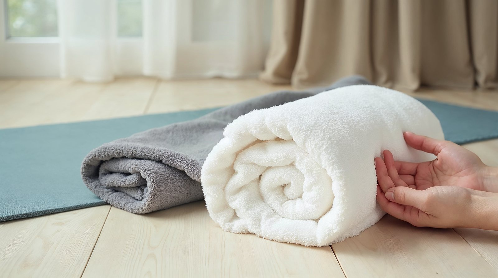
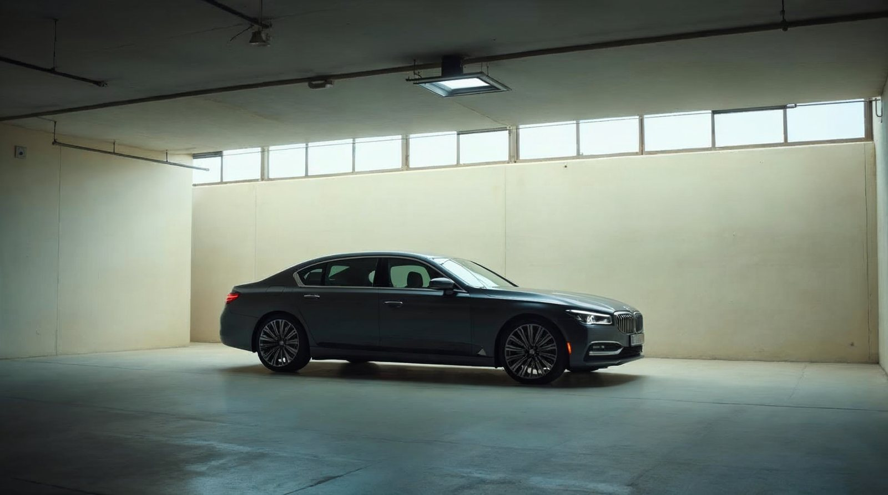
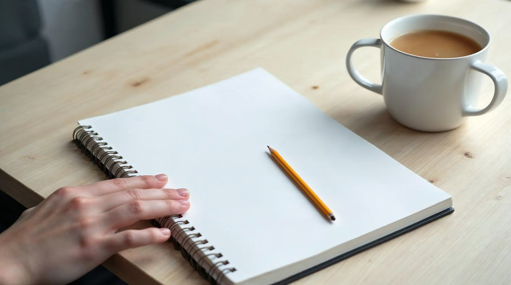

이종호 한의사 감수좋은꿈참사랑한의원 대표원장 (한의사 면허번호 19769)발행 2026-11-22 · 수정 2026-11-26
이 글의 차례
신호를 기다리며 멈춰 서 있는데 뒤에서 "쿵" 하고 받힙니다. 놀라서 차에서 내리고, 상대 운전자와 이야기를 나누고, 보험사에 전화를 겁니다. 그 순간에는 이상하게도 아픈 줄을 잘 모릅니다. "괜찮으세요?" 하는 물음에 "네, 괜찮은 것 같아요" 하고 대답하고 집에 돌아오지요.
그런데 다음 날 아침, 베개에서 고개를 들려는데 목이 뻣뻣하게 굳어 있습니다. 세수하려고 허리를 숙이는데 뻐근함이 올라옵니다.
진료실에서 이런 말씀을 자주 듣습니다. "사고 날엔 멀쩡했는데요, 하루 지나니까 여기저기 아파요." 그 말씀 끝에는 대개 걱정이 붙어 있습니다. 내가 괜히 엄살을 부리는 건 아닌지, 엑스레이에서 아무 이상 없다던데 왜 이렇게 아픈지, 이걸 어디서부터 어떻게 살펴야 하는지요.
사고는 몇 초 만에 지나갔는데, 그 뒤에 따라오는 일들은 생각보다 길고 번거롭습니다. 몸도 아픈데 처리할 일까지 많으니 얼마나 마음이 복잡하실까 싶습니다.
먼저 답부터 드리겠습니다. 교통사고 뒤 목과 허리가 아프다면, 첫째로 병원에서 응급 증상과 골절이 없는지 확인합니다. 그다음 남은 통증을 사고가 난 방향과 지금 불편한 동작을 기준으로 차근차근 살핍니다. 사고 직후에는 괜찮다가 하루 이틀 뒤에 아파 오는 일은 드물지 않으니, 당황하지 마시고 순서대로 짚어 가시면 됩니다.
왜 사고 뒤에 목과 허리가 아플 수 있나요
차가 부딪히는 순간을 떠올려 보시면 이해가 쉽습니다. 몸은 안전띠에 붙잡혀 있는데 머리는 무게 때문에 앞뒤로 크게 흔들립니다. 그 짧은 순간에 목 뒤쪽과 앞쪽의 근육, 그리고 뼈와 뼈를 이어 주는 인대가 갑자기 늘어났다가 되돌아옵니다.
허리도 비슷합니다. 앉은 자세에서 충격을 받으면 골반과 허리 사이가 비틀리듯 힘을 받을 수 있습니다. 겉에 상처가 없어도 속에서는 꽤 큰 일이 지나간 셈이지요.
그런데 왜 그날은 안 아팠을까요? 사람이 크게 놀라면 몸은 위기를 넘기는 데 온 힘을 씁니다. 심장이 빨리 뛰고 온몸이 바짝 긴장한 상태에서는 통증을 덜 느끼기도 합니다. 집에 돌아와 씻고 잠들고, 그 긴장이 풀린 다음 날에야 몸이 "사실 여기가 놀랐어요" 하고 말을 꺼내는 겁니다. 그래서 하루 이틀 뒤에 아파 오는 것을 이상하게 여기실 필요는 없습니다.
통증이 번져 가는 이유도 있습니다. 목이 아프면 우리는 자기도 모르게 고개를 덜 돌리고, 어깨를 움츠리고, 몸통째로 돌아봅니다. 허리가 불편하면 한쪽으로 기대어 앉습니다.
아픈 곳을 아끼려는 이런 자세가 며칠 이어지면, 처음 놀란 곳 말고 어깨와 등, 엉덩이 쪽까지 뭉침이 퍼지기도 합니다. 진료실에서 "처음엔 목만 아팠는데 이제 등까지 결려요" 하시는 분이 적지 않은 까닭입니다.
한의학에서는 이런 상태를 놀란 근육과 막힌 흐름으로 보기도 하고, 사고 뒤 흔들린 마음과 잠, 소화까지 함께 살핍니다. 몸이 크게 놀란 뒤에는 밥맛이 없어지거나 속이 더부룩하고, 잠이 얕아지는 분이 많습니다. 아픈 곳만 보는 것보다 이런 변화를 함께 들여다볼 때 지금 몸이 어떤 상태인지 더 잘 보입니다.
이런 분들을 진료실에서 자주 뵙습니다
특정한 누구의 이야기가 아니라, 사고 뒤 오시는 분들에게서 자주 겹쳐 보이는 모습을 몇 가지 적어 보겠습니다. 혹시 지금 내 상황과 닮은 데가 있는지 떠올려 보셔도 좋겠습니다.
예를 들어 출근길에 뒤에서 가볍게 받힌 직장인이라면, 그날은 회사에 가서 하루를 그냥 보냅니다. 이틀째 아침부터 목이 굳어 모니터를 보려고 고개를 돌리기가 힘들어집니다. 일은 밀려 있고, 병원에 갈 시간은 마땅치 않고, 가벼운 사고였으니 괜찮겠지 하며 며칠을 버티다 오십니다.
이런 분께는 병원 검사를 먼저 받으셨는지 확인하고, 일하는 자세에서 어느 동작이 가장 불편한지부터 함께 찾습니다.
예를 들어 사고 뒤 운전석에 앉기만 하면 몸이 굳고 손에 땀이 난다는 분도 계십니다. 통증은 조금씩 가라앉는데, 오히려 마음이 쉽게 가라앉지 않습니다. 밤에 사고 장면이 떠올라 잠을 설치기도 합니다. 저는 이런 이야기를 들으면 아픈 곳만큼이나 잠과 긴장 상태를 자세히 여쭙습니다. 마음이 놀란 것도 몸이 놀란 것과 함께 다뤄야 할 일이기 때문입니다.
예를 들어 배달이나 운송처럼 몸을 쓰는 일을 하다 사고를 당한 분은 마음이 더 급합니다. 하루라도 빨리 다시 일을 시작해야 하니까요. 이런 분께는 다시 일을 시작하기 전에 어떤 동작이 아직 불편한지, 오토바이에 앉거나 짐을 들 때 어디가 당기는지를 함께 확인합니다.
서두르는 마음은 충분히 이해합니다. 다만 몸이 아직 따라오지 못하는데 무리하면 오래 끌 수 있어서, 그 사이를 같이 가늠해 보자고 말씀드립니다.
자주 하시는 오해, 조금 풀어 드릴게요
"엑스레이가 깨끗하다는데 아플 리가 없잖아요." 이 말씀을 정말 자주 듣습니다. 엑스레이는 뼈를 보는 데 좋은 검사입니다. 앞에서 말씀드렸듯 근육과 인대가 놀란 정도는 사진에 잘 드러나지 않을 수 있습니다. 그러니 사진이 깨끗하다는 것은 뼈에 큰 문제가 보이지 않는다는 뜻이지, 아플 이유가 없다는 뜻은 아닙니다. 아프신 건 아프신 겁니다.
"살짝 부딪힌 접촉사고였는데요." 사고의 크기와 몸이 받은 충격이 꼭 비례하지는 않습니다. 앉아 있던 자세, 고개를 어느 쪽으로 돌리고 있었는지, 원래 목과 허리가 얼마나 지쳐 있었는지에 따라 같은 충격도 다르게 남습니다.
"병원 치료를 받는 중인데 한의원도 같이 다녀도 되나요?" 함께 받으시는 분들이 많습니다. 다만 어디서 어떤 검사와 치료를 받고 계신지, 어떤 약을 드시는지 알려 주셔야 겹치지 않게 살필 수 있습니다.
"통증만 가라앉으면 다 된 거죠?" 이렇게 물으시는 분도 계십니다. 아픈 게 줄어드는 건 물론 반가운 일입니다. 그런데 사고 뒤에는 통증이 줄어든 다음에도 잠이 예전 같지 않거나, 차에 타면 몸이 먼저 굳거나, 밥맛이 돌아오지 않는 일이 남기도 합니다.
저는 이런 것들도 사고가 남긴 흔적이라고 생각합니다. 아픈 곳이 덜해졌다면, 그다음엔 하루가 예전의 리듬으로 돌아왔는지도 함께 봐 주셨으면 합니다. 그래야 다시 운전대를 잡을 때, 다시 일터로 나갈 때 마음이 조금 더 편하실 겁니다.
먼저 이렇게 여쭙니다
처음 오시면 저는 이런 것부터 하나씩 여쭙습니다. 기억나지 않는 것은 비워 두셔도 괜찮습니다.
- 사고가 언제, 어느 방향에서 났는지(앞, 뒤, 옆)
- 어느 자리에 앉아 계셨고 안전띠를 매셨는지
- 지금 가장 불편한 동작이 무엇인지(고개 돌리기, 앉았다 일어나기, 오래 앉아 있기)
- 병원에서 받은 검사와 들으신 진단
- 사고 뒤 잠, 소화, 기분, 운전할 때 마음이 어떤지
사고 방향을 여쭙는 데에는 이유가 있습니다. 뒤에서 받혔는지 옆에서 부딪혔는지에 따라 목과 허리가 흔들린 방향이 다르고, 그만큼 살펴볼 자리가 달라집니다. "그게 무슨 상관이에요?" 하고 의아해하시는 분도 계신데, 이 짧은 대답 하나가 손으로 짚어 볼 곳을 정하는 데 꽤 도움이 됩니다.
시간이 지나서야 나타나는 것들
사고 뒤 며칠, 길게는 한두 주가 지나서야 드러나는 불편이 있습니다. 목이 뻣뻣해 고개를 돌리기 어렵거나, 어깨와 등이 돌을 얹은 것처럼 무겁거나, 앉았다 일어날 때 허리가 뻐근한 것이 흔합니다. 두통이나 가벼운 어지럼, 얕아진 잠이 함께 오는 분도 있습니다.
이런 변화는 "사고 때문인지 아닌지 모르겠다" 하고 넘기기 쉽습니다. 그래서 저는 사고 뒤부터 날마다 짧게라도 적어 두시라고 말씀드립니다. 어느 날부터 어디가 어떻게 불편했는지, 어떤 동작을 하면 더 아팠는지요.
기억은 생각보다 빨리 흐려집니다. 일주일 전 일을 떠올려 보시라고 하면 대부분 "그냥 계속 아팠어요"라고 하십니다. 짧은 메모가 그 '계속'을 나누어 보여 줍니다.

일상에서 먼저 해 볼 수 있는 것
사고 뒤 며칠은 몸이 아직 놀라 있는 시기입니다. 무거운 짐을 들거나 평소 하던 운동을 그대로 하기보다 잠시 쉬어 가는 편이 좋습니다. 그렇다고 꼼짝 않고 누워만 계시라는 뜻은 아닙니다.
아프지 않은 범위에서 고개를 천천히 좌우로 돌려 보고, 허리를 살짝 앞뒤로 움직여 굳지 않게 해 주세요. 억지로 끝까지 늘리지 마시고, '아, 여기서부터 당기네' 싶은 곳에서 멈추면 됩니다.
오래 앉아 있어야 하는 날은 30~40분마다 한 번씩 일어나 자세를 바꿔 보세요. 운전을 해야 한다면 등받이를 너무 뒤로 젖히지 말고, 머리 받침이 뒤통수 가까이 오도록 맞춰 두시면 목이 덜 버팁니다. 잠자리에서는 베개가 너무 높으면 목이 꺾이니, 고개가 편하게 받쳐지는 높이를 찾아 주세요.
마음이 놀란 것도 챙기셔야 합니다. 사고 장면이 자꾸 떠오르거나 운전대를 잡기가 두렵다면, 그건 의지가 약해서가 아닙니다. 사람이라면 그럴 수 있습니다.
당분간은 무리해서 운전하지 마시고, 잠들기 전 휴대폰 대신 따뜻한 물로 씻고 천천히 숨을 내쉬는 시간을 가져 보세요. 혼자 끙끙 앓기보다 가까운 사람에게 "나 아직 좀 놀라 있어"라고 말하는 것만으로도 조금은 덜어집니다.

사고 뒤 첫 몇 주, 시기별로 나누어 보면
사고 당일부터 사흘 정도는 몸이 가장 놀라 있는 때입니다. 이 시기에는 병원 검사를 먼저 받고, 아픈 곳을 세게 주무르거나 뜨거운 찜질을 오래 하기보다 쉬게 해 주시는 편이 좋습니다. 붓거나 열감이 느껴지는 곳이 있다면 더더욱 그렇습니다.
사우나나 과음도 며칠은 미뤄 두세요. 대신 잠을 조금 더 주무시고, 끼니는 거르지 말고 따뜻하고 부드러운 것으로 챙기세요. 몸이 회복할 재료와 시간을 주는 겁니다.
나흘째부터 일주일 남짓은 굳어 가는 몸을 조금씩 풀어 주는 시기입니다. 아프지 않은 범위 안에서 목을 천천히 돌려 보고, 짧게 걷는 것부터 다시 시작해 보세요. 동네 한 바퀴, 10분이면 충분합니다. 이때 어느 동작이 여전히 걸리는지가 분명해집니다. 그 동작을 메모해 두시면 진료 때 바로 그 자리부터 살펴볼 수 있습니다.
2주가 넘어가면 대부분의 분들이 일상으로 돌아가려 애쓰십니다. 출근도 하고 운전도 다시 합니다. 그런데 이 무렵 "괜찮아진 줄 알았는데 오후만 되면 다시 뻐근해요" 하시는 분이 많습니다.
아침과 저녁, 일하기 전과 후에 몸이 어떻게 다른지 비교해 보시면, 무엇이 아직 몸에 부담이 되는지 보입니다. 서두르지 않으셔도 됩니다. 몸이 따라오는 속도를 보면서 하나씩 늘려 가시면 됩니다.
한의원에서 함께 살필 수 있는 경우
병원에서 급한 문제가 없다는 확인을 받으셨는데도 이런 불편이 남아 있다면 한의원에서 함께 살펴볼 수 있습니다.
- 목이 굳어 고개 돌리기가 힘든 경우
- 앉았다 일어날 때 허리가 불편한 경우
- 사고 뒤 잠이 얕아지고 속이 불편한 경우
첫 방문에는 사고 경위와 병원 검사 결과, 그동안 받은 치료를 먼저 확인합니다. 그다음 목과 허리를 직접 움직여 보시게 하고, 어느 각도에서 아픈지, 누르면 아픈 자리가 어디인지, 팔다리 힘과 저림 같은 신경 증상은 없는지 살핍니다. 필요하다고 판단되면 초음파로 근육과 인대 상태를 확인하기도 합니다.
그리고 저는 양손을 내어 달라고 말씀드립니다. 양쪽 손목의 맥을 짚으면서 요즘 잠은 어떠신지, 밥맛과 속은 괜찮은지, 손발은 차지 않은지, 몸이 따뜻한지 여쭙습니다. "목 아파서 왔는데 잠은 왜 물으세요?" 하실 수도 있습니다.
사고 뒤에는 통증 때문에 잠을 설치기도 하고, 잠을 설쳐서 다음 날 몸이 더 무겁기도 합니다. 그 두 가지가 서로 얽혀 있는 경우가 많아서, 저는 아픈 곳과 함께 하루의 리듬을 같이 듣고 싶습니다.
이렇게 살핀 뒤 침, 약침, 추나, 한약, 체외충격파, 물리치료 가운데 오늘 상태에 맞는 방법을 함께 정합니다. 그리고 다시 오시면 지난번에 가장 불편했던 그 동작부터 이어서 여쭙습니다. 고개를 오른쪽으로 돌릴 때가 힘들다고 하셨다면, 다음에도 그 동작을 같이 해 보는 식입니다.
자동차보험으로 진료를 받으실 수 있는지, 접수는 어떻게 하는지는 상황마다 다를 수 있습니다. 보험 처리와 필요한 서류는 보험사 담당자에게 먼저 확인해 주시고, 보험사에서 받은 접수 번호가 있으면 메모해 오세요. 한의원 접수에 필요한 것은 방문 전 전화로 확인해 주세요.
얼마나 지켜보고, 언제 상담하면 좋을까요
사고 뒤 처음 며칠은 통증이 오히려 늘 수 있습니다. 하루에 한 번, 가장 불편한 동작과 그때 아픈 정도를 0부터 10까지 숫자로 적어 두세요.
2주쯤 지나도 움직임이 나아지지 않거나, 두통과 어지럼, 잠 설침이 이어진다면 진료를 받아 보시길 권합니다. 꼭 2주를 기다리실 필요는 없습니다. 일상이 불편하다면 그때가 상담하실 때입니다. 다만 두통이나 어지럼이 점점 심해지거나 구토가 함께 온다면, 아래 신호처럼 기다리지 말고 가까운 응급실로 가세요.

이렇게 기록해 오시면 상담이 쉬워집니다
- 사고 일시와 장소, 부딪힌 방향을 적은 짧은 메모
- 병원 검사 결과, 진단서, 영상 자료(있다면)와 복용 중인 약
- 보험사에서 받은 접수 번호(있다면)
- 처음 아팠던 곳과 지금 아픈 곳이 달라졌는지, 날짜별 짧은 기록
이런 증상은 먼저 확인이 필요합니다
- 의식이 흐려지거나 두통이 점점 심해지는 경우
- 구토가 반복되는 경우
이런 신호가 있으면 한의원보다 가까운 병원이나 응급실을 먼저 찾으세요.
마치며
사고는 내가 고른 일이 아닙니다. 그런데 그 뒤의 아픔과 번거로움은 고스란히 내 몫이 되니, 억울하고 지치는 마음이 드는 것도 당연합니다. 너무 혼자 감당하려 하지 마셨으면 합니다.
보험사 전화, 병원 서류, 미뤄 둔 일까지 한꺼번에 몰려오면 내 몸을 들여다볼 틈이 없어지기 쉽습니다. 그럴수록 하루에 단 몇 분이라도 "오늘 내 목과 허리는 어땠지?" 하고 스스로에게 물어봐 주세요. 그 짧은 물음이 몸을 돌보는 첫걸음이 됩니다.
다음에 진료실에서 뵈면, 저는 사고가 어느 방향에서 났는지, 그리고 요즘 밤에 잠은 좀 주무시는지부터 여쭙겠습니다.
함께 읽으면 좋은 글
- 교통사고 뒤 목이 삔 것(경추 염좌)은 어떻게 살피나요?
- 교통사고 뒤 어지럼과 두통이 계속될 때는 어떤 점을 확인하나요?
- 주말에 가벼운 접촉사고가 났는데 한의원 진료는 언제 받으면 되나요?

여쭙는 것
- 사고가 언제, 어느 방향에서 났는지(앞, 뒤, 옆)
- 어느 자리에 앉아 계셨고 안전띠를 매셨는지
- 지금 가장 불편한 동작이 무엇인지(고개 돌리기, 앉았다 일어나기, 오래 앉아 있기)
생활에서 해 볼 것
- 사고 뒤 며칠은 몸이 아직 놀라 있는 시기입니다.
- 무거운 짐을 들거나 평소 하던 운동을 그대로 하기보다 잠시 쉬어 가는 편이 좋습니다.
- 그렇다고 꼼짝 않고 누워만 계시라는 뜻은 아닙니다.
한의원에서 함께 살필 것
- 목이 굳어 고개 돌리기가 힘든 경우
- 앉았다 일어날 때 허리가 불편한 경우
- 사고 뒤 잠이 얕아지고 속이 불편한 경우
먼저 확인이 필요한 신호
- 의식이 흐려지거나 두통이 점점 심해지는 경우
- 구토가 반복되는 경우
한눈에 보는 표
| 구분 | 핵심 |
|---|---|
| 여쭙는 것 | 사고가 언제, 어느 방향에서 났는지(앞, 뒤, 옆) 어느 자리에 앉아 계셨고 안전띠를 매셨는지 |
| 한의원에서 함께 살필 것 | 목이 굳어 고개 돌리기가 힘든 경우 앉았다 일어날 때 허리가 불편한 경우 |
| 먼저 확인이 필요한 신호 | 의식이 흐려지거나 두통이 점점 심해지는 경우 구토가 반복되는 경우 |
자주 묻는 질문
교통사고가 나면 한의원과 병원 중 어디를 먼저 가야 하나요?
사고 뒤에는 먼저 병원에서 응급 증상과 골절이 없는지 확인하시길 권합니다. 의식이 흐려지거나 두통이 점점 심해지는 경우, 구토, 팔다리 저림이나 힘 빠짐, 가슴이나 배의 심한 통증이 있으면 한의원 진료를 기다리지 말고 가까운 응급실로 가세요. 이런 확인이 끝난 뒤 남은 통증은 한의원에서 함께 살필 수 있습니다.
사고 직후에는 안 아팠는데 며칠 뒤에 아픈 것도 상담할 수 있나요?
네. 사고 당시 긴장 때문에 통증을 덜 느끼다가 며칠 뒤에 드러나는 경우가 드물지 않습니다. 사고 일시와 지금 불편한 동작을 기준으로 살핍니다.
처음 갈 때 무엇을 가져가야 하나요?
사고 일시 메모, 병원 검사 결과나 진단서, 복용 중인 약, 보험사에서 받은 접수 번호(있다면)를 가져오시면 상담이 쉬워집니다.
자동차보험으로 진료를 받을 수 있나요?
자동차보험으로 한의원 진료를 받는 분이 많습니다. 다만 처리 여부와 절차는 상황마다 다를 수 있어 보험사 담당자에게 먼저 확인해 주시고, 한의원 접수 방법은 방문 전 전화(02-815-7510)로 확인해 주세요.
사고 뒤 잠을 잘 못 자고 운전이 무서워요.
사고 뒤에는 드물지 않은 일입니다. 통증과 함께 잠과 긴장 상태를 여쭙고 생활 리듬을 같이 살피며, 불안이 오래 이어지면 전문적인 심리 지원도 안내해 드립니다.
좋은꿈참사랑한의원은 재진 때 지난번 이야기부터 이어서 여쭙니다. 진료시간과 예약은 오시는 길에서 확인하세요.
어디서 상담받을 수 있나요?
좋은꿈참사랑한의원은 서울 동작구 만양로2길 2 신성빌딩 3층·5층(서울 동작구 상도동, 7호선 상도역 3번 출구 근처)에 있습니다. 한의사 3명(이종호 대표원장, 조영기 수석진료원장, 정원영 진료원장)이 진료합니다. 진료시간은 평일 09:30~20:00(점심 13:00~14:00), 토·일·공휴일 09:30~15:00이며, 방문 전 전화로 확인을 권합니다. 예약은 네이버 예약, 카카오톡 상담, 전화 02-815-7510로 받습니다.
이 글은 일반적인 건강 정보이며 개인의 진단이나 치료를 대신하지 않습니다. 증상이 있거나 복용 중인 약이 있다면 진료를 통해 확인하세요. 치료 효과는 개인마다 다를 수 있습니다.
작성 기준: 일반적으로 알려져 있는 건강 정보를 참고해 정리했습니다(대표원장 감수). 증상 기록은 1~2주 동안 하루 1회, 비슷한 시간에 적어 오시면 지난 상태와 비교하기 쉽습니다.